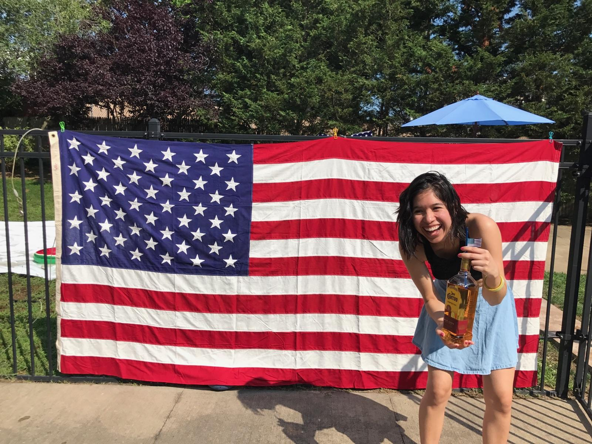
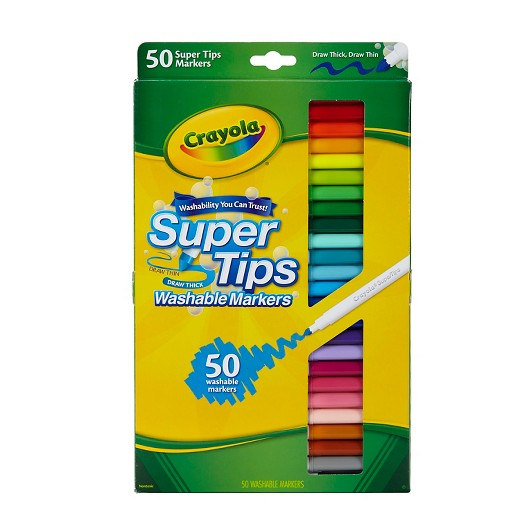
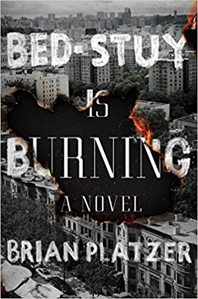

Alexandra Villalon
obnoxious Texan, wanna-be-blogger, books > movies

That should have been a Texas flag, also meet my friend, Jose!
I call Houston my home. I studied International Studies at Macalester College in St. Paul, Minnesota, moved to Austin after college for a year, and now live in Brooklyn. Two important things I learned after college are 1) making friends is HARD 2) it's ok to not be ok.
My Go-To (Non-Alcoholic) Drink
My Go-To Writing Utensil

Must-Know Facts:
- I have written my dreams down since 4th grade.
- I'm obsessed with the Hip Hop Culture. I have taught a class on Hip Hop history and culture, choreographed several dance performaces, and have taught hip hop dance to students ranging from middle school to adults.
- My dad's from Mexico and my mom's from Bolivia. Aside from popular belief, I'm not Asian.
- I love reading!
Inspiring Figures:
- Dwayne Michael Carter Jr.
- Anthony Bourdain
- My Professors
- God?
What I'm Currently Reading:

"I no longer seek paradise, I am paradise."